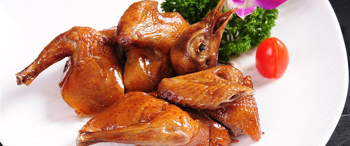
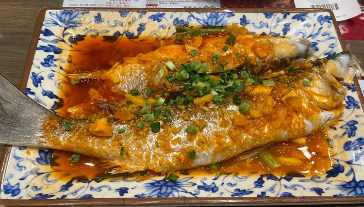
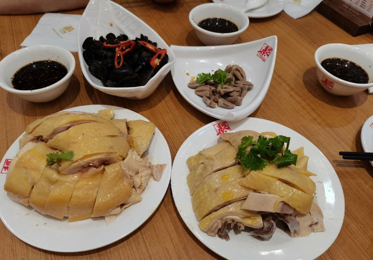
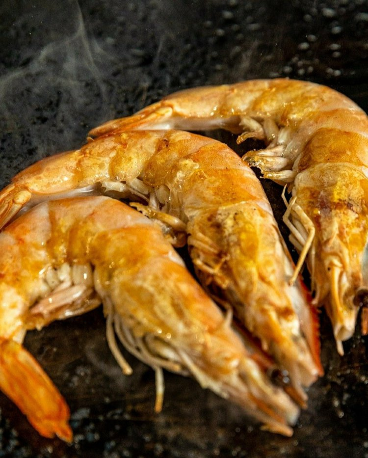
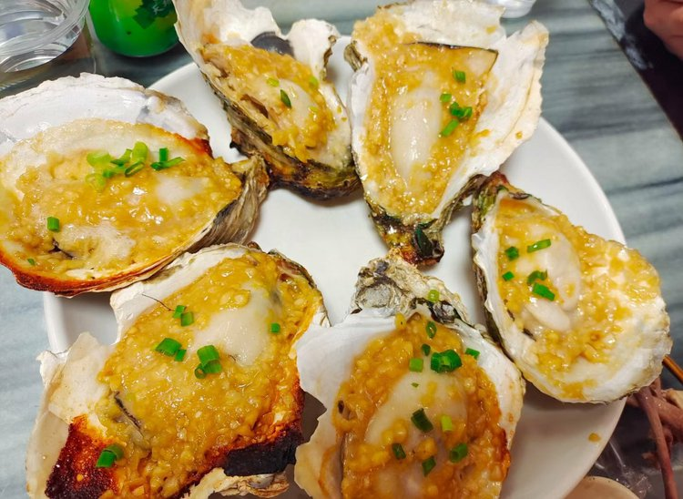
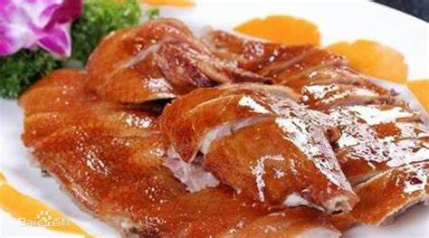
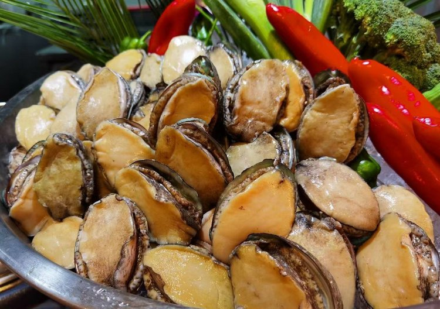
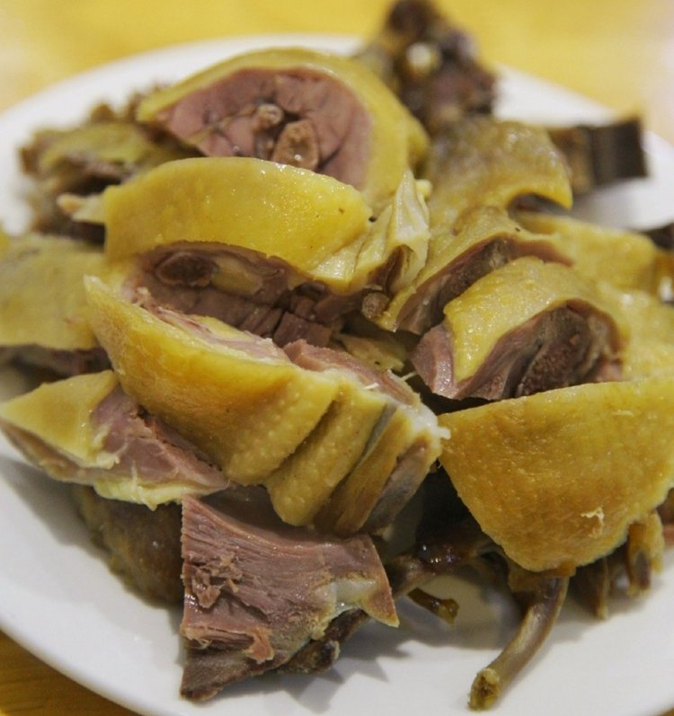
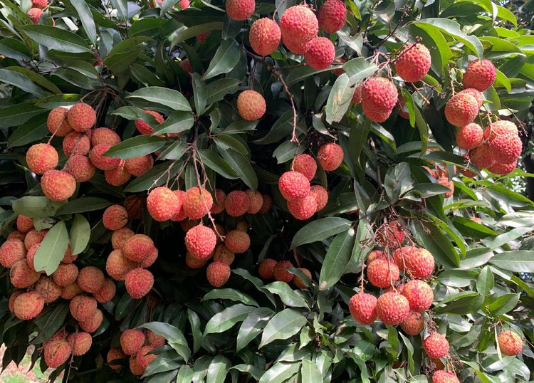
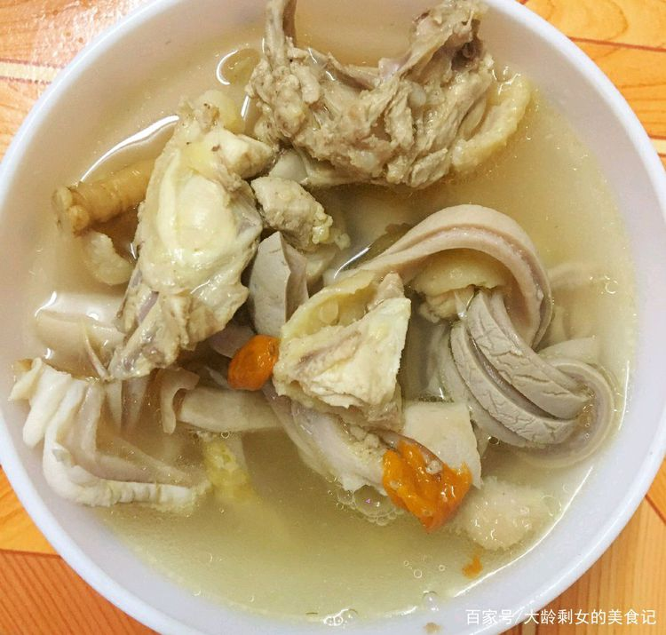

返回首页
深圳美食
- 光明乳鸽

红烧光明乳鸽是广东省深圳市的一道传统名菜，属于粤菜，鲜香可口 、外酥里嫩被称为“天下第一鸽”。光明乳鸽是深圳三大特产之一，因其特有的美味广为人知。鸽肉味咸、性平、具有滋补作用，常吃可使身体强健，心神不宁、儿童成长、体力透支者均有功效。
- 宝安福永乌头鱼

福永乌头鱼是深圳特色美食之一，肉质肥美、营养丰富，深受大家喜爱。乌头鱼以福永乌头鱼最为著名。乌头鱼又称“新鱼”，不食草类，专食小虾、小蟹，生活在蟹洞、海朗头和蚝塘中。乌头鱼体形较小呈圆形，最重不超过1斤，全身只有一条脊骨，肉多骨少，非常适合小孩子食用。
- 龙岗三黄鸡

龙岗三黄鸡，是深圳宝安龙岗最著名的特产之一，远近闻名、历史悠久。龙岗三黄鸡，样貌特别，即“三黄一须”嘴黄、毛黄、脚黄并有胡须，其体型较大于其他品种的肉鸡，肉质丰厚、嫩滑，更容易入味，所以一直是深圳地区的精品特产。
- 盐田海鲜

盐田海鲜是深圳特色小吃，俗话说“吃海鲜,到盐田”。盐田海鲜有多、廉、鲜三大特点，海鲜都是自己亲自挑选，有澳龙、大花龙，濑尿虾，珍珠鲍鱼，皇帝蟹，还有海捞贝，青口、花甲、海螺等等，保证让你一次吃得过瘾。盐田海鲜最常见的吃法是清蒸，现捉现卖的海产品无需添加太多佐料，也不用很复杂的烹饪技巧，只清蒸，并拌以特制的生抽就可以上桌了，不但保持了海鲜的香味，而且营养丰富，清淡可口。
- 沙井蚝

沙井蚝是深圳著名的一道美食，沙井蚝产自深圳沙井，体型肥大，色泽乳白，肉质细嫩鲜美是深圳最著名的特产。沙井蚝不仅好吃，营养还丰富，富含蛋白质和维生素，含碘量是牛奶和蛋黄的200倍，被誉为“海底牛奶”。
- 公明烧鹅

公明烧鹅是广东省深圳市的一道传统美食，属于粤菜系，因产自深圳光明区公明街道而得名。公明烧鹅因色香味俱佳而名扬天下。刚出炉的烧鹅金黄鲜亮，皮脆嫩可口，肉肥而不腻，香味浓郁扑鼻。
- 南澳鲍鱼

“食海鲜，到南澳”，南澳水产资源丰富，是金国最大规模的陆地养鲍基地之一。鲍鱼古称“石蝮”、“石决明”，又称“九孔螺”,肉质滑爽脆嫩、营养丰富，自古便被视为“鲍、参、翅、肚”四海味珍品之首，有可滋阴怡神功效。
- 松岗腊鸭

松岗腊鸭是广东省深圳市的传统名吃之一，属于粤菜系。鸭肉性温补，细嫩可口，营养丰富，是上等滋补佳品。因皮白、肉厚、细嫩、香口而出名。
- 南山荔枝

南山荔枝品种有糯米糍、桂味、妃子笑等，果实成熟在6月下旬。南山荔枝具有肉软滑细嫩、多汁、味浓甜等特点。营养价值高，被誉为“中华之珍品”。“一骑红尘妃子笑，无人知是荔枝来”，早在唐宋时期，荔枝便是进献的“贡品”。
- 猪肚包鸡

猪肚包鸡又称凤凰投胎，是一道广东深圳传统的地方名菜，是广东地区酒席必备的餐前用汤，汤里浓中带清，有浓郁的药材味和胡椒香气，非常好吃。猪肚清脆爽口，鸡肉鲜嫩可口，汤的味道更增添了鸡的鲜味；锅里面还有菜干、香菇等干类杂菜，吸收肉味，汤味变得清甜；最后加入肉丸、鲜鸡什、竹肠等肉类，汤水越加浓郁美味。